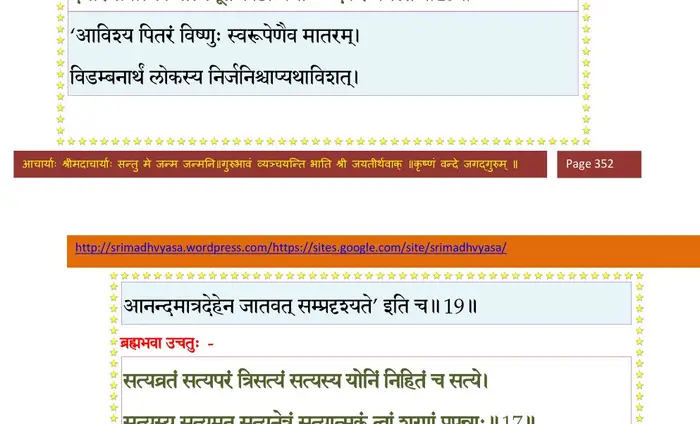
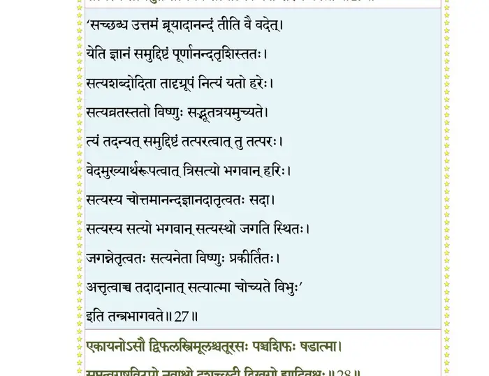
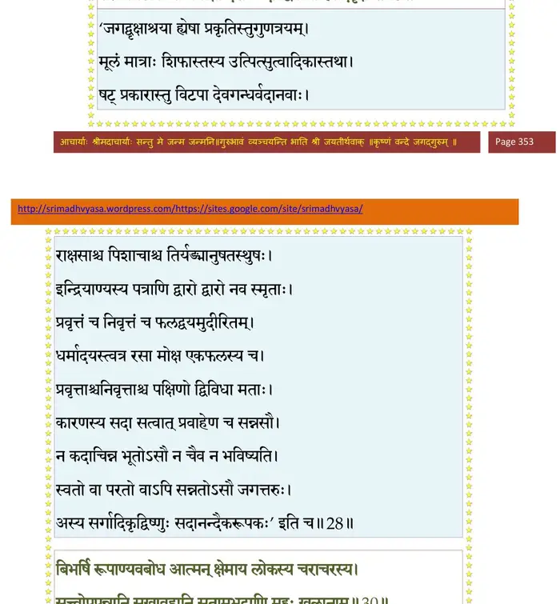
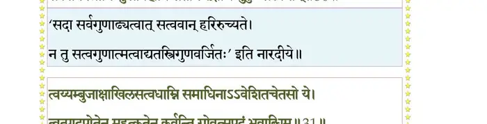
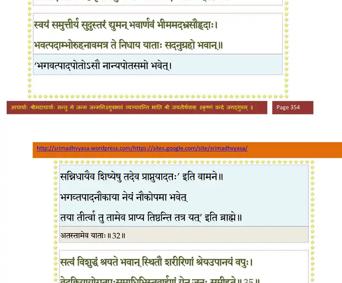
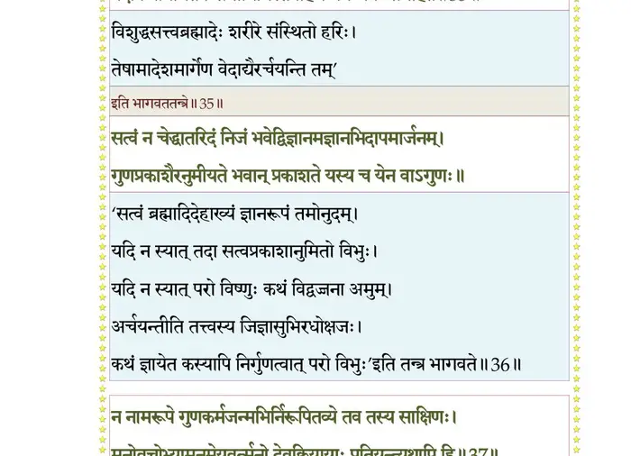
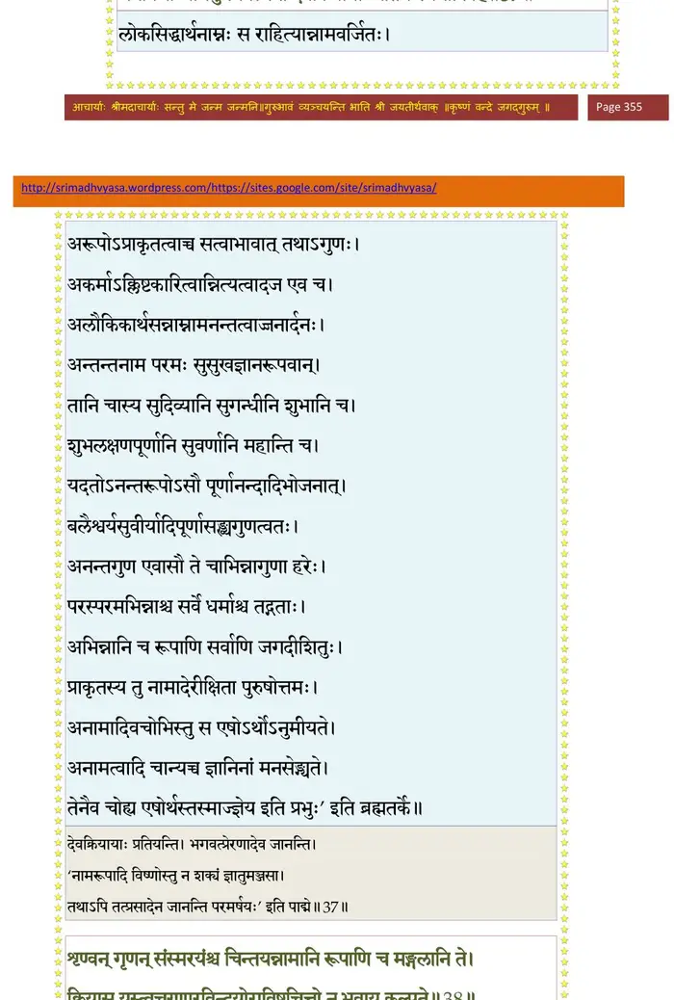
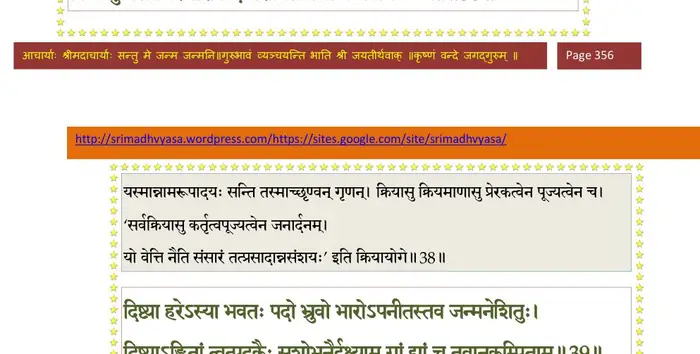
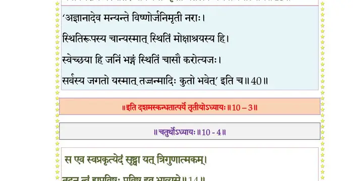

स्कन्ध 10 · अध्याय 3
श्लोक १
श्रीशुक उवाच–
प्रलम्बबकचाणूरतृणावर्तमहाशनैः ।
मुष्टिकारिष्टद्विविदपूतनाकेशिधेनुकैः ।। १ ।।
प्रलम्बबकचाणूरतृणावर्तमहाशनैः ।
मुष्टिकारिष्टद्विविदपूतनाकेशिधेनुकैः ।। १ ।।
श्लोक २
अन्यैश्चासुरभूपालैर्बाणभौमादिभिर्युतः ।
यदूनां कदनं चक्रे बली मागधसंश्रयः ।। २ ।।
यदूनां कदनं चक्रे बली मागधसंश्रयः ।। २ ।।
श्लोक ३
ते पीडिता निविविशुः कुरुपाञ्चालकेकयान् ।
साल्वान् विदर्भान् निषधान् विदेहान् मागधानपि ।। ३ ।।
साल्वान् विदर्भान् निषधान् विदेहान् मागधानपि ।। ३ ।।
श्लोक ४
एके तमनुरुन्धाना ज्ञातयः पर्युपासते ।
मधुरायां स्थिताश्चैव येऽक्रूराद्या विशाम्पते ।
हतेषु षट्सु बालेषु देवक्या औग्रसेनिना ।। ४ ।।
मधुरायां स्थिताश्चैव येऽक्रूराद्या विशाम्पते ।
हतेषु षट्सु बालेषु देवक्या औग्रसेनिना ।। ४ ।।
श्लोक ५
सप्तमो वैष्णवं धाम यमनन्तं प्रचक्षते ।
गर्भो बभूव देवक्या हर्षशोकविवर्धनः ।। ५ ।।
गर्भो बभूव देवक्या हर्षशोकविवर्धनः ।। ५ ।।
श्लोक ६
भगवानपि विश्वात्मा विदित्वा कंसजं भयम् ।
यदूनां निजनाथानां योगमायां समादिशत् ।। ६ ।।
यदूनां निजनाथानां योगमायां समादिशत् ।। ६ ।।
श्लोक ७
गच्छ देवि व्रजं भद्रे गोपगोभिरलङ्कृतम् ।
रोहिणी वसुदेवस्य भार्याऽऽस्ते नन्दगोकुले ।। ७ ।।
रोहिणी वसुदेवस्य भार्याऽऽस्ते नन्दगोकुले ।। ७ ।।
श्लोक ८
अन्याश्च कंससंविग्ना विवरेषु वसन्ति हि ।
देवक्या जठरे गर्भं शेषाख्यं धाम मामकम् ।। ८ ।।
देवक्या जठरे गर्भं शेषाख्यं धाम मामकम् ।। ८ ।।
श्लोक ९
तत् सन्निकृष्य रोहिण्या उदरे सन्निवेशय ।
अथाहं स्वांशभागेन देवक्याः पुत्रतां शुभे ।। ९ ।।
अथाहं स्वांशभागेन देवक्याः पुत्रतां शुभे ।। ९ ।।
श्लोक १०
प्राप्स्यामि त्वं यशोदायां नन्दपत्न्यां भविष्यसि ।
अर्चिष्यन्ति मनुष्यास्त्वां सर्वकामवरेश्वरीम् ।। १० ।।
अर्चिष्यन्ति मनुष्यास्त्वां सर्वकामवरेश्वरीम् ।। १० ।।
श्लोक ११
नानोपहारबलिभिः सर्वकामवरप्रदाम् ।
नामधेयानि कुर्वन्ति स्थानानि च नरा भुवि ।। ११ ।।
नामधेयानि कुर्वन्ति स्थानानि च नरा भुवि ।। ११ ।।
श्लोक १२
दुर्गेति भद्रकालीति विजया वैष्णवीति च ।
कुमुदा चण्डिका कृष्णा माधवी कन्यकेति च ।। १२ ।।
कुमुदा चण्डिका कृष्णा माधवी कन्यकेति च ।। १२ ।।
श्लोक १३
माया नारायणीशाना शारदेत्यम्बिकेति च ।। १३ ।।
श्लोक १४
गर्भात्सङ्कर्षणात् तं वै प्राहुः सङ्कर्षणं भुवि ।
रामेति लोकरमणाद् बलभद्रं बलोच्छ्रयात् ।। १४ ।।
रामेति लोकरमणाद् बलभद्रं बलोच्छ्रयात् ।। १४ ।।
श्लोक १५
श्रीशुक उवाच–
सन्दिष्टैवं भगवता तथेत्योमिति तद्वचः ।
प्रतिगृह्य परिक्रम्य गां गता तत् तथाऽकरोत् ।। १५ ।।
सन्दिष्टैवं भगवता तथेत्योमिति तद्वचः ।
प्रतिगृह्य परिक्रम्य गां गता तत् तथाऽकरोत् ।। १५ ।।
श्लोक १६
गर्भे प्रणीते देवक्या रोहिणीं योगनिद्रया ।
अहो विस्रंसितो गर्भ इति पौरा विचुक्रुशुः ।। १६ ।।
अहो विस्रंसितो गर्भ इति पौरा विचुक्रुशुः ।। १६ ।।
श्लोक १७
भगवानपि विश्वात्मा भक्तानामभयङ्करः ।
आविवेशांशभागेन मन आनकदुन्दुभेः ।। १७ ।।
आविवेशांशभागेन मन आनकदुन्दुभेः ।। १७ ।।
भागवततात्पर्यनिर्णय
श्लोक १८
स बिभ्रत् पौरुषं धाम राजमानो यथा रविः ।
दुरासदोऽतिदुर्धर्षो भूतानां सम्बभूव ह ।। १८ ।।
दुरासदोऽतिदुर्धर्षो भूतानां सम्बभूव ह ।। १८ ।।
श्लोक १९
ततो जगन्मङ्गलमच्युतांशं समाहितं शूरसुतेन देवी ।
दधार सर्वात्मकमात्मभूतं काष्टा यथाऽऽनन्दकरं नभस्तः।। १९ ।।
दधार सर्वात्मकमात्मभूतं काष्टा यथाऽऽनन्दकरं नभस्तः।। १९ ।।
भागवततात्पर्यनिर्णय

श्लोक २०
सा देवकी सर्वजगन्निवासनिवासभूता नितरां विरेजे ।
भोजेन्द्रगेहेऽग्निशिखेव रुद्धा सरस्वती द्यूतखले यथा सती।। २० ।।
भोजेन्द्रगेहेऽग्निशिखेव रुद्धा सरस्वती द्यूतखले यथा सती।। २० ।।
श्लोक २१
तां वीक्ष्य कंसः प्रभयाऽजितम्भरां विरोचयन्तीं भवनं शुचिस्मिताम् ।
आहैष मे प्राणहरो हरिर्गुहां ध्रुवं श्रितो यन्न पुरेयमीदृशी।। २१ ।।
आहैष मे प्राणहरो हरिर्गुहां ध्रुवं श्रितो यन्न पुरेयमीदृशी।। २१ ।।
श्लोक २३
किमद्य तस्मिन् घटनीयमाशु मे यथार्थतन्त्रो न विहन्ति विक्रमम् ।
स्त्रियः स्वसुर्गुरुमत्या वधोऽयं यशः श्रियं हन्त्यनुकूलमायुः।। २३ ।।
स्त्रियः स्वसुर्गुरुमत्या वधोऽयं यशः श्रियं हन्त्यनुकूलमायुः।। २३ ।।
श्लोक २४
स एष जीवन् खलु सम्परेतो वर्तेत योऽत्यन्तनृशंसितेन ।
देहे मृते तमनु ह्यर्थकामौ यशोऽमलं गौरभिमानिनो ध्रुवम्।। २४ ।।
देहे मृते तमनु ह्यर्थकामौ यशोऽमलं गौरभिमानिनो ध्रुवम्।। २४ ।।
श्लोक २४
इति घोरतमाद् भावात् सन्निवृत्तः स्वयं प्रभुः ।
आस्ते प्रतीक्षंस्तज्जन्म हरेर्वैरानुबन्धवित् ।। २४ ।।
आस्ते प्रतीक्षंस्तज्जन्म हरेर्वैरानुबन्धवित् ।। २४ ।।
श्लोक २५
आसीनः संविशंस्तिष्ठन् भुञ्जानः पर्यटन् पिबन् ।
चिन्तयानो हृषीकेशमपश्यत् तन्मयं जगत् ।। २५ ।।
चिन्तयानो हृषीकेशमपश्यत् तन्मयं जगत् ।। २५ ।।
श्लोक २६
ब्रह्मा भवश्च तत्रैत्य मुनिभिर्नारदादिभिः ।
देवैः सानुचरैः साकं गीर्भिर्विष्णुमथास्तुवत् ।। २६ ।।
देवैः सानुचरैः साकं गीर्भिर्विष्णुमथास्तुवत् ।। २६ ।।
श्लोक २७
ब्रह्मभवावूचतुः–
सत्यव्रतं सत्यपरं त्रिसत्यं सत्यस्य योनिं निहितं च सत्ये ।
सत्यस्य सत्यमुत सत्यनेत्रं सत्यात्मकं त्वां शरणं प्रपन्नाः।। २७ ।।
सत्यव्रतं सत्यपरं त्रिसत्यं सत्यस्य योनिं निहितं च सत्ये ।
सत्यस्य सत्यमुत सत्यनेत्रं सत्यात्मकं त्वां शरणं प्रपन्नाः।। २७ ।।
भागवततात्पर्यनिर्णय

श्लोक २८
एकायनोऽसौ द्विफलस्त्रिमूलः चातूरसः पञ्चशिफः षडात्मा ।
सप्तत्वगष्टविटपो नवाक्षो दशच्छदी द्विखगो ह्यादिवृक्षः।। २८ ।।
सप्तत्वगष्टविटपो नवाक्षो दशच्छदी द्विखगो ह्यादिवृक्षः।। २८ ।।
भागवततात्पर्यनिर्णय

श्लोक २९
त्वमेक एवास्य सतः प्रसूतिः स्थानं निधानं त्वमनुग्रहश्च ।
त्वन्मायया संवृतचेतसस्त्वां पश्यन्ति नाना न विपश्चितो ये।।२९।।
त्वन्मायया संवृतचेतसस्त्वां पश्यन्ति नाना न विपश्चितो ये।।२९।।
श्लोक ३०
बिभर्षि रूपाण्यवबोध आत्मन् क्षेमाय लोकस्य चराचरस्य ।
सत्वोपपन्नानि सुखावहानि सतामभद्राणि मुहुः खलानाम्।। ३० ।।
सत्वोपपन्नानि सुखावहानि सतामभद्राणि मुहुः खलानाम्।। ३० ।।
भागवततात्पर्यनिर्णय

श्लोक ३१
त्वय्यम्बुजाक्षाखिलसत्त्वधामि्न समाधिनाऽऽवेशितचेतसो ये ।
त्वत्पादपोतेन महत्कृतेन कुर्वन्ति गोवत्सपदं भवाब्धिम्।। ३१ ।।
त्वत्पादपोतेन महत्कृतेन कुर्वन्ति गोवत्सपदं भवाब्धिम्।। ३१ ।।
भागवततात्पर्यनिर्णय

श्लोक ३२
स्वयं समुत्तीर्य सुदुस्तरं द्युमन् भवार्णवं भीममदभ्रसौहृदाः ।
भवत्पदाम्भोरुहनावमत्र ते निधाय याताः सदनुग्रहो भवान्।।३२।।
भवत्पदाम्भोरुहनावमत्र ते निधाय याताः सदनुग्रहो भवान्।।३२।।
श्लोक ३३
येऽन्येऽरविन्दाक्ष विमुक्तमानिनः त्वय्यस्तभावादविशुद्धबुद्धयः ।
आरुह्य कृच्छ्रेण परं पदं ततः पतन्त्यधोऽनादृतयुष्मदङ्घ्रयः।। ३३ ।।
आरुह्य कृच्छ्रेण परं पदं ततः पतन्त्यधोऽनादृतयुष्मदङ्घ्रयः।। ३३ ।।
श्लोक ३४
तथा न ते माधव तावकाः क्वचिद् भ्रश्यन्ति मार्गात् त्वयि बद्धसौहृदाः ।
त्वयाऽभिगुप्ता विचरन्ति निर्भया विनायकानीकपमूर्धसु प्रभो।।३४।।
त्वयाऽभिगुप्ता विचरन्ति निर्भया विनायकानीकपमूर्धसु प्रभो।।३४।।
श्लोक ३५
सत्त्वं विशुद्धं श्रयते भवान् स्थितौ शरीरिणां श्रेयउपायनं वपुः ।
वेदक्रियायोगतपःसमाधिभिः तवार्हणं येन जनः समीहते।। ३५ ।।
वेदक्रियायोगतपःसमाधिभिः तवार्हणं येन जनः समीहते।। ३५ ।।
भागवततात्पर्यनिर्णय

श्लोक ३६
सत्त्वं न चेद् धातरिदं निजं भवेद् विज्ञानमज्ञानभिदापमार्जनम् ।
गुणप्रकाशैरनुमीयते भवान् प्रकाशते यस्य च येन वाऽगुणः।।३६।।
गुणप्रकाशैरनुमीयते भवान् प्रकाशते यस्य च येन वाऽगुणः।।३६।।
श्लोक ३७
न नामरूपे गुणजन्मकर्मभिः निरूपितव्ये तव तस्य साक्षिणः ।
मनोवचोभ्यामनुमेयवर्त्मनो देवक्रियायाः प्रतियन्त्यथापि हि।।३७।।
मनोवचोभ्यामनुमेयवर्त्मनो देवक्रियायाः प्रतियन्त्यथापि हि।।३७।।
भागवततात्पर्यनिर्णय

श्लोक ३८
शृण्वन् गृणन् संस्मरयंश्च चिन्तयन् नामानि रूपाणि च मङ्गलानि ते ।
क्रियासु यस्त्वच्चरणारविन्दयोराविष्टचित्तो न भवाय कल्प्यते।।३८।।
क्रियासु यस्त्वच्चरणारविन्दयोराविष्टचित्तो न भवाय कल्प्यते।।३८।।
भागवततात्पर्यनिर्णय

श्लोक ४२
दिष्ट्या हरेऽस्या भवतः पदो भुवो भारोऽपनीतस्तव जन्मनेशितुः ।
दिष्ट्याऽङ्कितां त्वत्पदकैः सुशोभनैर्द्रक्ष्याम गां द्यां च तवानुकम्पिताम् ।।
न तेऽभवस्येश भवस्य कारणं विना विनोदं बत तर्कयामहे ।
भवो निरोधः स्थितिरप्यविद्ययाऽऽकृता यतस्त्वय्यभवाश्रयात्मनि ।।
मत्स्याश्वकच्छपनृसिंहवराहहंसराजन्यविप्रविबुधेषु कृतावतारः ।
त्वं पासि नस्त्रिभुवनं च तथाऽधुनेश भारं भुवो हर यदूत्तम वन्दनं ते ।।
दिष्ट्याऽम्ब ते कुक्षिगतः परः पुमान्
अंशेन साक्षाद् भगवान् भवाय नः ।
मा भूद् भयं भोजपतेर्मुमूर्षोः
गोप्ता यदूनां भविता तवात्मजः ।। ४२ ।।
दिष्ट्याऽङ्कितां त्वत्पदकैः सुशोभनैर्द्रक्ष्याम गां द्यां च तवानुकम्पिताम् ।।
न तेऽभवस्येश भवस्य कारणं विना विनोदं बत तर्कयामहे ।
भवो निरोधः स्थितिरप्यविद्ययाऽऽकृता यतस्त्वय्यभवाश्रयात्मनि ।।
मत्स्याश्वकच्छपनृसिंहवराहहंसराजन्यविप्रविबुधेषु कृतावतारः ।
त्वं पासि नस्त्रिभुवनं च तथाऽधुनेश भारं भुवो हर यदूत्तम वन्दनं ते ।।
दिष्ट्याऽम्ब ते कुक्षिगतः परः पुमान्
अंशेन साक्षाद् भगवान् भवाय नः ।
मा भूद् भयं भोजपतेर्मुमूर्षोः
गोप्ता यदूनां भविता तवात्मजः ।। ४२ ।।
भागवततात्पर्यनिर्णय

श्लोक ४३
इत्यभिष्टूय पुरुषं यद्रूपमनिदं यथा ।
ब्रह्मेशानौ पुरोधाय देवाः प्रतिययुर्दिवम् ।। ४३ ।।
ब्रह्मेशानौ पुरोधाय देवाः प्रतिययुर्दिवम् ।। ४३ ।।
।। इति श्रीमद्भागवते दशमस्कन्धे तृतीयोऽध्यायः ।।